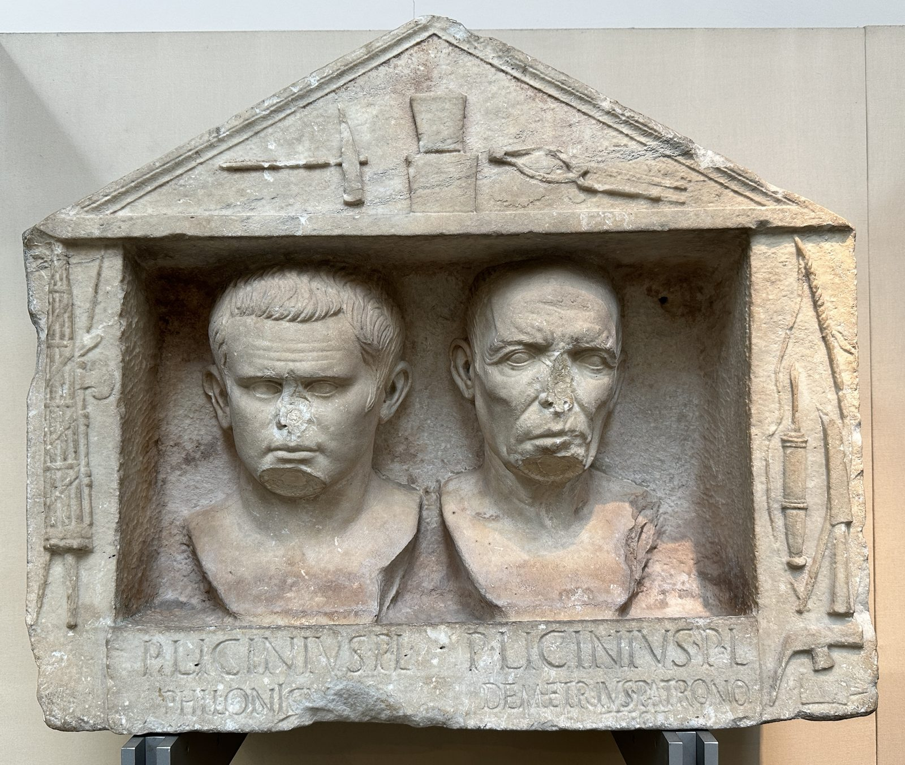
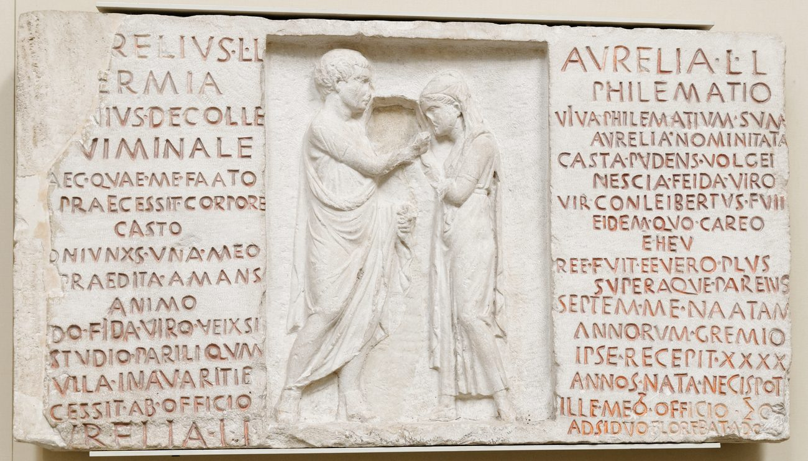
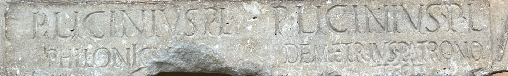

Unit 6 · Slavery in ancient Rome · Lesson 1
Introducing Roman slavery: period, terms and sources
How did enslaved people experience Roman slavery, and how can we know, when almost every surviving text was written by the people who owned them?
Year 11 Ancient History · Present with → or space · Read on a phone with R

Connect · 3 minutes · books closed · everyone writes · press K for the timer
The five-move paragraph: what did you do well?
Name one move of the five-move paragraph you used well in Unit 4, and one to improve.
Every lesson in this unit practises one part of an extended response. Today’s part: reading the question before you write.
- JJudgeanswers the question, with a degree · slip: a yes or no answer
- EEvidencebrings in each source with its provenance · slip: a quotation dropped in with no source
- AAnalysesays what the evidence shows, and how · slip: retelling the source
- EEvaluateweighs a rival view or the limits of the evidence · slip: “biased, so useless”
- RResolveends with a refined judgement · slip: repeating the Judge, or changing its degree
Learning intentions and success criteria · 2 minutes
Today’s goals
- understand the period, terms and range of sources for Roman slavery
- deconstruct unseen questions that ask for a judgement
- explain why we say ‘enslaved people’ and when ‘slave’ is still used
- sort the sources by type and say whose perspective each gives
- deconstruct ‘to what extent’, ‘assess’ and ‘evaluate’ questions and say how the answers differ
Syllabus outcomes: AH-11-04 accounts for the different perspectives of individuals and groups in their historical context · AH-11-05 analyses different types of sources for evidence to support a historical account or argument · AH-11-07 communicates historical understanding, applying historical knowledge, terms and concepts. Life Skills: AH-LS-08 uses sources to form conclusions about the past · AH-LS-11 communicates information about the past using historical terms and concepts.
Note-making · the routine for the whole course
How to structure your notes
questions and key terms, written after
short phrases, arrows (→ leads to), abbreviations (c. = about; BCE = Before the Common Era)
- 1A new unit, a new pageA cue column about a quarter of the page wide; title and date at the top; room for a summary at the bottom.
- 2Listen and look, then writeDon’t copy while a slide is being explained. Phrases, not sentences; a source for every claim.
- 3Write your own notes at the ✎ checkpointThen compare with the model notes, one row at a time. Add what you missed in a second colour.
- 4Write the cue questions afterwardsUse exam verbs: explain, assess, evaluate. To revise, cover your notes and answer the cues.
- 5Finish with a three-sentence summaryOne checkpoint today, in the You do: the sources, and what each is reliable for.
Key vocabulary · start the unit word wall
Words you will use all unit
| Verb (NESA) | Meaning · what the answer does |
|---|---|
| Assess | ‘Make a judgement of value, quality, outcomes, results or size.’ Department advice: make and support a judgement. |
| Evaluate | ‘Make a judgement based on criteria. Determine the value of.’ Department advice: name the criteria and judge against them. |
| To what extent | Not a glossary word: NESA lists it among the ‘self-explanatory terms’. A judgement of degree (largely, partly, only to a limited extent), held from the Judge to the Resolve. |
| Added today | Meaning |
| Relief | A carving that stands out from a flat stone background. |
| Epitaph | Words carved on a tomb in memory of the dead. |
| Republic / Principate | Rome governed by elected officials and the senate / the rule of emperors, from Augustus in 27 BCE. |
| Content terms | Meaning |
|---|---|
| Enslaved person / slave | ‘Enslaved person’ (the syllabus’s term) keeps the person in view; ‘slave’ is used when quoting sources and in established terms (‘slave wars’). |
| Owner / master | The person who legally owned an enslaved person; the syllabus says ‘masters’. |
| Freedman / freedwoman | A formerly enslaved person (libertus, liberta), who owed duties to the former owner. |
| Patron | The former owner of a freed person. |
| Stoic | A follower of a Greek philosophy that stressed virtue and shared humanity, as Seneca did. |
| Familia | A Roman household, including the enslaved people in it. |
1 · The period and the terms · I do — the timeline
The period: about 200 BCE to 200 CE
- 1Start: Rome’s wars of the 2nd century BCEConquest enslaved very large numbers: Strabo, citing Polybius, says 150,000 people of Epirus were enslaved (in 167 BCE; a claim, not a count).
- 2Republic, then emperorsCato wrote under the Republic; Seneca, Pliny and Gaius under the emperors. The slave wars in Sicily and Spartacus’s revolt fall in the late 2nd and 1st centuries BCE.
- 3End: the Antonine emperors, 138–192 CEFour hundred years: long enough to see change, so every claim needs a “when”.
Why must a historian name a period before making claims about slavery?
Because slavery changed over four centuries, a source is evidence for its own time and place. A claim needs a “when”, and a source from outside the period needs extra care.
1 · The period and the terms · I do — the terms, and our agreement
How we will talk about slavery
- 1enslaved peopleThe syllabus’s term. Slavery was done to people: it was their condition, not who they were.
- 2‘slave’Only inside quotation marks and established terms (‘slave wars’). The translations of the writers we read use it, and we quote sources exactly.
- 3owners (masters)The people who legally owned them; the syllabus says ‘masters’.
- 4freed peopleFreedmen and freedwomen: formerly enslaved, and still owing duties to a patron, the former owner.
Why does a historian write ‘enslaved people’ but still quote ‘slave’?
‘Enslaved people’ keeps the people in view: slavery was imposed on them. But a quotation must match its source exactly, and the translations say ‘slave’, so the word stays inside quotation marks and fixed terms.
- These sources include violence, punishment and sexual exploitation. We name what happened once, plainly, and do not dwell on detail.
- We ask why a writer includes violence: to warn owners, to blame, to justify.
- No role-play of enslaved people or owners.
- Slavery and trafficking still exist. If something affects you, speak to your teacher or step out quietly.
2 · The sources · I do — think aloud · two owners, two purposes
Two owners, two purposes
Sell worn-out oxen, blemished cattle, blemished sheep, wool, hides, an old wagon, old tools, an old slave, a sickly slave, and whatever else is superfluous.
Cato the Elder (234–149 BCE), a senator, On Agriculture (De Agri Cultura) 2.7, about 160 BCE, advice to an owner visiting his farm · trans. W. D. Hooper and H. B. Ash (Loeb, 1934)
An owner writing for owners, to make a farm pay. He lists old and sick enslaved people among the surplus to sell, beside worn-out oxen and old tools.
“They are slaves,” people declare. Nay, rather they are men. “Slaves!” No, comrades.
Seneca (about 4 BCE – 65 CE), a Stoic philosopher and Nero’s tutor, Letters to Lucilius 47.1, about 62–65 CE · trans. R. M. Gummere (Loeb, 1917)
An owner and philosopher, writing to a friend to teach Stoic virtue. He argues that enslaved people are human and should be treated kindly, but he asks for better treatment, not freedom: ‘Treat your inferiors as you would be treated by your betters’ (47.11).
Two owners, two purposes, and one silence: neither lets an enslaved person speak.
2 · The sources · We do — pairs · 5 minutes · press K for the timer
Sort the sources: what type, and whose perspective?
For each card, write its type (owners’ handbook · Stoic letter · letters · history · law · inscription · relief · object) and whose perspective it gives. Some cards could go in two types: say why.
Cato the Elder, a senator, writes a guide for a farm owner: how to check the overseer’s work, what to sell, how much to feed the workers.
Seneca, a philosopher and adviser to the emperor Nero, writes to a friend about how an owner should treat the enslaved people in his household.
Pliny the Younger, a wealthy owner of estates, publishes letters he wrote to friends. His letters to the emperor Trajan were added later, probably after his death.
Tacitus, a senator, writes an account of the emperors’ reigns. One passage tells of the murder of an owner, Pedanius Secundus, in Rome in 61 CE, and how the senate decided to punish his household.
Gaius, a legal expert, writes a textbook of Roman law: who was free, who was enslaved, an owner’s power, and how a person could be freed.

From a tomb in Rome: a husband and wife, both freed by the same owner, and a verse in their own voices. He was a butcher.
From a tomb near Rome: two men, their names, the rods and axes of a freeing ceremony, and the tools of their trades.

An iron collar with a bronze tag. The tag speaks as the wearer: it asks the finder to hold the wearer and return them to the owner, Zoninus, for a gold coin.
Images: Marie-Lan Nguyen (CC BY 2.5) · APK (CC BY 4.0) · Mark Landon (CC BY 4.0). Full details on the last slide.
2 · The sources · We do — check the sort · build the perspective column · 4 minutes
Whose perspective? And who is missing?
| Card | Type | Whose perspective |
|---|---|---|
| A · Cato | owners’ handbook | an owner, advising owners |
| B · Seneca | Stoic letter | an owner and philosopher |
| C · Pliny | letters | an owner: letters he published, and official letters to the emperor |
| D · Tacitus | history | a senator, writing decades later |
| E · Gaius | law | a legal expert: the law’s rules |
| F · the butcher’s tomb | inscription (on a relief) | a freed couple, as they chose to be remembered |
| G · the two men | relief (with names) | freed men, as they chose to be remembered |
| H · the collar | object (with words) | an owner, in the wearer’s voice |
Look down the perspective column. Whose voice is missing?
Enslaved people’s own. Owners and other free men wrote almost every text. Enslaved people speak mainly through tombs set up by or for freed people (F, G): people who had been freed and could afford a monument. Even the collar’s “I” is the owner’s words.
So what can the surviving sources reveal best?
Owners’ aims and views, the law’s rules, and how some freed people wished to be seen. Enslaved people’s own experiences are much harder to reach.
2 · The sources · We do — supported looking · 4 minutes
Who paid for this, and why?

1 · Who is shown, and what do the names tell us?
Two men, Publius Licinius Philonicus and Publius Licinius Demetrius. In each name, P · L after ‘Publius Licinius’ means “freedman of Publius”: both had been enslaved and freed.
2 · What else is carved, and why?
On the left, what the museum calls “the rods and axes used in the ceremony of freeing a slave”; at the top and on the right, the tools of a smith or moneyer and of a carpenter. Freedom and work.
3 · Who paid for it, and why?
Demetrius: his line ends patrono, and the record reads it as “made [this tombstone] to [his] patron”, probably Philonicus. He probably chose how they would be remembered: freed, named and skilled.
3 · You do · Writing focus · 8 minutes · I do → We do → apply
Writing focus: one topic, three judgement verbs
To what extent do the surviving sources reveal the experiences of enslaved people?
- Verb
- to what extent: not a glossary word but one of NESA’s “self-explanatory terms”: a degree, how far?
- Topic
- enslaved people’s experiences: their lives as they lived them
- Limits
- only what the surviving sources reveal; Rome, about 200 BCE – 200 CE
- Do
- degree and main reason first; weigh what each kind of source can and cannot show; end on the same degree
Worked example · written for this lesson · on a different question: how far do freed people’s tomb reliefs show how they wished to be seen?
Freed people’s tomb reliefs show, to a large extent, how they wished to be seen, because they or their families probably commissioned them.
Same topic, same limits: what does each verb make the answer do?
Assess the value of the surviving sources for understanding the experiences of enslaved people.
Evaluate the surviving sources as evidence for the experiences of enslaved people.
- Assess
- NESA: ‘Make a judgement of value, quality, outcomes, results or size.’ Do: judge how valuable the sources are, weighing what they can and cannot show
- Evaluate
- NESA: ‘Make a judgement based on criteria. Determine the value of.’ Do: name the criteria first (who made it, why, when, how typical), then judge against them
To what extent → a degree · assess → a judgement of value or size (here, value), weighed both ways · evaluate → criteria first, then the judgement.
Open with a degree: “The surviving sources reveal … largely / partly / only to a limited extent, because …” Keep that degree to the end. Your Writing toolkit (booklet pages 3–4): the directive verbs.
Notes checkpoint · You do · 7 minutes · cue: reliable for …, but not for …
The sources: reliable for what?
3 · You do · 9 minutes · check first · then write · press K for the timer
To what extent do the surviving sources reveal the experiences of enslaved people?
- Open with a degree and your main reason, with because.
- Add one source from today, with who made it and when, that supports your reason.
- Underline your degree word: you would keep it to the end.
The translations of ancient writers say ‘slave’; the 2024 syllabus says ‘enslaved people’. Write a short note on what each term foregrounds and when a historian must still quote ‘slave’.
Check first: what must your first sentence do?
Answer how far with one degree word (largely, partly, only to a limited extent) and give the main reason with because. Not yes or no, and not a list of sources.
Frame for your first sentence: “The surviving sources reveal the experiences of enslaved people … , because …” Word bank:
3 · You do · after you write · compare yours with a model
A model opening: one possible judgement
The surviving sources reveal the experiences of enslaved people only to a limited extent, because owners wrote almost every surviving text. Cato, for example, an owner writing a farming handbook in about 160 BCE, advises a farm owner to sell ‘an old slave, a sickly slave, and whatever else is superfluous’ (2.7), which shows how owners were told to value enslaved people, not how those people experienced being sold.
“Partly” works too, if your reason supports it: for example, that tombs such as the Licinius relief let some freed people choose how they were remembered.
Finish your notes If time · or at home
Summary: three sentences
- What period does this unit study, and where does it start?
- Why do we say ‘enslaved people’?
- What is the range of sources, and what is their main limitation?
This unit studies Roman slavery from about 200 BCE, when Rome’s wars enslaved very large numbers of people, to the Antonine emperors at the end of the 2nd century CE. We say ‘enslaved people’ to keep the people in view, and use ‘slave’ only where a source or a fixed term does. The sources range from owners’ handbooks, letters, histories and law to inscriptions, reliefs and objects, but owners wrote almost every text, so enslaved people speak mainly through tombs set up by or for freed people.
Check · the unit question · 3 minutes · everyone writes · keep it
How did enslaved people experience Roman slavery, c. 200 BCE – 200 CE, and how do we know?
Write your first judgement now, before you have studied the evidence. Keep it: in Lesson 19 you test it against everything you have learned.
“Enslaved people probably experienced Roman slavery mainly as …, although …; we know this mostly from …”
names one main experience, is hedged (“probably”), because you have not seen the evidence yet, and says what kind of source the answer rests on. Any judgement is fine today: the point is to commit, then test it.
Exit ticket · 4 minutes · before you leave
Finish both halves
“To what extent asks me to …; evaluate asks me to …”
To what extent: judge how far something is true, with a degree (largely, partly, only to a limited extent), kept from the first sentence to the last. Evaluate: name the criteria first (who made a source, why, when, how typical), then judge against them (NESA: ‘Make a judgement based on criteria. Determine the value of.’).
Then check yourself against today’s three “I can” statements. Next lesson: where did Rome’s enslaved people come from? You work through a source pack at your own pace.
Practice and review · 1 of 4 · true, false, justify
True or false? Justify your answer
- 1This unit studies Roman slavery from about 200 BCE to about 200 CE. True — from the mass enslavements of Rome’s 2nd-century BCE wars to the Antonine emperors (138–192 CE).
- 2We use ‘slave’ when quoting a source and in fixed terms such as ‘slave wars’. True — otherwise we say ‘enslaved people’, which keeps the people in view.
- 3Cato’s handbook records how enslaved people felt about being sold. False — it advises an owner what to sell; it shows the owner’s view, not theirs.
- 4In Letter 47, Seneca calls for an end to slavery. False — he argues that enslaved people are human and should be treated kindly, but asks for better treatment, not freedom (47.11).
- 5The Licinius relief was set up (paid for) by a freed man, Demetrius, for his patron. True — his line ends patrono, “to his patron”: probably Philonicus, beside him.
- 6The Zoninus collar is evidence from the middle of this unit’s period. False — it dates from the 4th century CE or later, after the period: it can suggest what continued, not prove it.
Practice and review · 2 of 4 · writing · deconstruct each question first
Three verbs, one source: Seneca’s Letter 47
- To what extent does Seneca’s Letter 47 challenge Roman slavery?
- Assess the value of Seneca’s Letter 47 for understanding owners’ attitudes.
- Evaluate Seneca’s Letter 47 as evidence for the treatment of enslaved people.
For each: verb · topic · limits · do. Do any two of them share a topic?
1: a degree of challenge (how far?). 2: a judgement of how valuable it is for owners’ attitudes, weighed both ways. 3: criteria first (Seneca’s position, purpose, date, how typical), then a judgement of its value for treatment. No two share a topic: challenge · attitudes · treatment. Read the whole question, not just the verb.
Write the first sentence of an answer to question 1, opening with a degree.
Seneca’s Letter 47 challenges Roman slavery only to a limited extent, because although he insists that enslaved people are ‘men’, he asks owners to treat their ‘inferiors’ kindly rather than to free them.
Practice and review · 3 of 4 · extension
‘Slave’ or ‘enslaved person’?
The translations of ancient writers say ‘slave’; the 2024 syllabus says ‘enslaved people’. Write a short note on what each term foregrounds and when a historian must still quote ‘slave’.
‘Enslaved person’ foregrounds the person and what was done to them: slavery becomes a condition others imposed, not an identity. ‘Slave’ foregrounds the category owners used, a person as property, which is how Cato can list ‘an old slave’ beside ‘old tools’. A historian must still quote ‘slave’ whenever quoting a source or translation, and keeps established terms such as ‘slave wars’, because changing the word inside a quotation would misreport the source.
Practice and review · 4 of 4 · cover your notes and answer from memory
Quick checks
- What period does this unit study, and why start about 200 BCE? About 200 BCE to 200 CE: from the mass enslavements of Rome’s 2nd-century BCE wars (Polybius’s figure, reported by Strabo: 150,000 from Epirus in 167 BCE) to the Antonine emperors.
- Why do we say ‘enslaved people’, and when do we still use ‘slave’? It keeps the people in view: slavery was imposed on them. ‘Slave’ stays inside quotations and fixed terms such as ‘slave wars’.
- What were Cato’s and Seneca’s purposes? Cato: to help an owner make a farm pay (sell the old and sick). Seneca: to teach Stoic virtue: enslaved people are human, so treat them kindly; not to end slavery.
- Name four types of source for Roman slavery and whose perspective each gives. For example: owners’ handbook (an owner); law (a legal expert); relief (freed people); object such as a collar (an owner, in the wearer’s voice).
- Who paid for the Licinius relief, and why does that matter? Demetrius, a freed man, for his patron: so it shows how freed men wished to be seen, not their lives while enslaved.
- How do to-what-extent, assess and evaluate questions differ? To what extent: a degree. Assess: a judgement of value or size, weighed both ways. Evaluate: criteria named first, then the judgement.
Sources and credits
Where everything comes from
Cato, On Agriculture (De Agri Cultura) 2.7, and the editors’ introduction: trans. W. D. Hooper and H. B. Ash (Loeb, 1934), LacusCurtius (public domain). Seneca, Letters to Lucilius 47.1, 47.11 and 12.3, and Gummere’s introduction: trans. R. M. Gummere (Loeb, vol. I, 1917), Wikisource (public domain; Wikisource text CC BY-SA 4.0).
The Licinius relief, British Museum 1954,1214.1: the museum’s gallery label, quoted briefly as transcribed on Wikimedia Commons (Mike Peel, 2024; CC BY-SA 4.0); the inscription (CIL XIV 2721–2722) and its translation, quoted briefly from ancientrome.ru. The Hermia and Philematium relief (CIL VI 9499): the museum’s label as transcribed on Commons (Mike Peel, 2024) and its Commons file record. The Zoninus collar (CIL XV 7194): its Commons file record; J. Trimble, “The Zoninus Collar and the Archaeology of Roman Slavery”, American Journal of Archaeology 120 (2016), for its iron ring and bronze tag. Strabo, Geography 7.7.3, citing Polybius: trans. H. L. Jones (Loeb, vol. III, 1924), LacusCurtius (public domain). Facts: Livius.org (Augustus; the Antonines). Timeline drawn for this lesson. The NESA Glossary of key words (definitions quoted word for word).


Outcomes and content: NSW Education Standards Authority (NESA), Ancient History 11–12 Syllabus (2024). © NESA.
- Funerary relief of the freedmen Publius Licinius Philonicus and Publius Licinius Demetrius, about 30–10 BCE (British Museum, 1954,1214.1) · Photo: APK · CC BY 4.0 · source
- Funerary relief of Lucius Aurelius Hermia and Aurelia Philematium, with a verse epitaph, Rome, about 80 BCE (British Museum, 1867,0508.55) · Photo: Marie-Lan Nguyen · CC BY 2.5 · source
- An iron collar with an inscribed bronze tag naming an owner, Zoninus, 4th century CE or later (Museo Nazionale Romano, inv. 65043) · Photo: Mark Landon · CC BY 4.0 · source
- The inscribed names on the Licinius relief (detail), about 30–10 BCE (British Museum, 1954,1214.1) · Photo: APK · CC BY 4.0 · source


.jpg){kind=link}
All images are public domain or openly licensed, and were resized or cropped for the web. Each is shared under the licence shown.